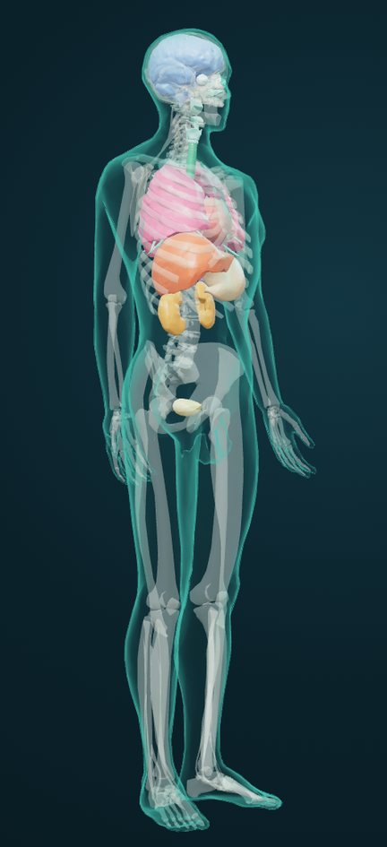
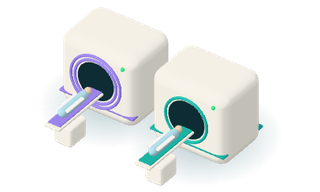
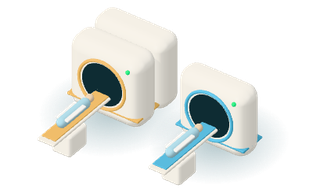
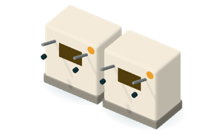
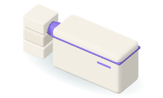
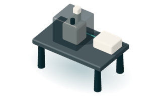
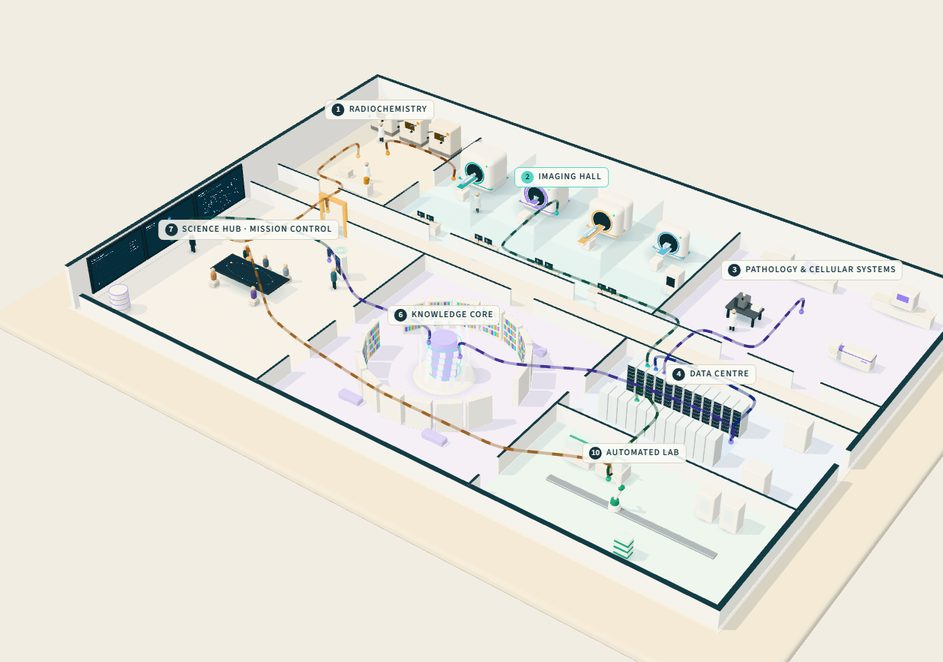

01 One body, imaged whole
A trace dose of radiolabelled medicine, then non-invasive PET, MRI and CT show where it goes. The same subject can be followed again over hours, days and weeks.

This interactive view needs WebGL. The five stages are described in the text.
Non-invasive radiogenomics · Whole-body AI
Advanced imaging, radiochemistry and spatial multi-omics tell us where a medicine travels, how long it stays and how tissue responds. AI turns that whole-body signal into decisions.
A trace dose of radiolabelled medicine, then non-invasive PET, MRI and CT show where it goes. The same subject can be followed again over hours, days and weeks.
Computer vision outlines more than 150 structures across the body, from the brain’s deep nuclei to the bones, so each signal is assigned to the place it comes from.
Each region of interest becomes a cloud of voxels, and every voxel carries signal: tracer concentration for biodistribution, tissue texture for radiogenomics.
Thousands of quantitative features per organ region describe shape, intensity, texture, tissue and cellular dynamics. Each column is one organ. Each dot is one feature of one region.
Redundant features are denoised. The rest are compared across regions and timepoints, grouped by body system, ready to be linked to dose, response and clinically relevant endpoints.
Illustration. Human reference anatomy with organ surfaces derived from AI segmentation; feature values are demonstration data. Sources
| Organ | System | Regions | Features | Mean z | Above +2σ | Below −2σ |
|---|
More than an AI team
Plenty of teams can train a model. We run the research facility that integrates data, models and outcomes by design: a fleet of instruments that see inside the living body without surgery, multi-scale spatial omics and radiochemistry that turn medicines into signals we can follow, and computing infrastructure to analyse every scan as it arrives.
Because acquisition, chemistry and AI sit together, each study is designed for the question, measured to a standard, and analysed the same way every time.

Molecular signal and soft-tissue anatomy in one session; anatomy, perfusion and diffusion across brain and body, with no ionising radiation for MRI.

Whole-body tracer distribution mapped onto CT anatomy and repeated over days to follow kinetics; CT is the reference frame for AI segmentation.
Bioluminescence and fluorescence for rapid in vivo screens and model development.

Labelling small molecules, peptides and antibodies with positron- and gamma-emitting isotopes.

Whole-slide, multiplex and AI-powered histopathology that checks, at cellular scale, what in vivo imaging sees.

Spatial protein and RNA, whole-transcriptome gene expression and single-cell profiling: genetics to cell type to druggable target, where cell state, not just cell type, matters.

Imaging mass spectrometry, proteomics and metabolomics: drug, metabolites and proteins mapped in place, from tissue down to single cells.

Super-resolution and live-cell imaging of cellular dynamics, cell state and cell health, uptake and payload release, cell–cell communication and the microenvironment, in complex in vitro models.
Zoom from body to molecule
From the whole living subject to the organ, the tissue, the cell, its organelles and the molecule itself, then out again to integrated multi-omics: one continuous flow of spatial information. Each scale answers a pillar of drug discovery: exposure at the site of action, target engagement, functional pharmacology, and the right target for the right patient.
Scroll to zoom in.
Whole subject · metres
PET follows a radiolabelled medicine through the whole living subject, again and again, without surgery; MRI and CT supply the anatomy it is mapped onto. The signal shows where the label is; other assays confirm the medicine is intact.
Exposure at the site of action
Organ · centimetres
AI outlines more than 150 structures, so uptake, perfusion and radiomics are measured organ by organ. Here, the kidney: often dose-limiting for radiolabelled medicines.
Exposure at the site of action
Tissue · millimetres
Whole-slide, multiplex and AI-powered histopathology resolve glomeruli and tubules, placing the drug against the tissue’s own architecture.
Target localisation
Cells · 100 micrometres
Live-cell and 3D imaging of complex in vitro models: cellular dynamics, cell state and cell health, cell–cell communication and the microenvironment.
Target engagement
Intracellular · 10 micrometres
Super-resolution microscopy follows uptake, endosomal escape and payload release, organelle by organelle.
Target engagement
Molecular · nanometres
Imaging mass spectrometry and single-molecule imaging map the drug, its metabolites and its target in place. Illustration generated for this site.
Functional pharmacology
Multi-omics · every layer
Human genetics, single-cell states, spatial transcriptomics and spatial proteomics aligned to the image: genetics to cell type to druggable target.
Right target, right patient
Tag it, then follow it
A radioactive label on a medicine lets us measure, repeatedly and without surgery, where the molecule goes: its biodistribution, whether it reaches its target, how it clears and how long it stays. The label shows where the signal is; complementary assays confirm the medicine is intact and active.
Inside the lab
Explore the facility as a model. Radiochemistry and a fleet of scanners feed a data platform; GPU compute analyses each study as it lands; a knowledge base keeps everything connected; in the Science hub, a touch-and-voice mission control lets scientists ask, simulate in silico and decide what happens next, and the loop closes back at radiochemistry.

The interactive model needs WebGL. The steps of the loop are listed alongside.
Collective intelligence
When new material arrives, the system checks for related work, duplication and conflicts, then connects it to what is already known. Every source makes the next one cheaper.
“Based on this program information and what we have learned from related work, what should we do next?”
On the Science hub’s touch wall, by voice or touch, the answer brings the new material together with relevant history: a cited précis with links to the originals, a proposed experimental approach (increasingly, checked in silico first), and the assumptions that still need scientific review. It can come back as text, audio narration or a diagram.
Built on open and commercial tools, including
Names are trademarks of their owners. Listing does not imply endorsement.
Collaborate
We work with discovery and development teams, academic partners and technology companies on in vivo imaging, radiochemistry and imaging AI.